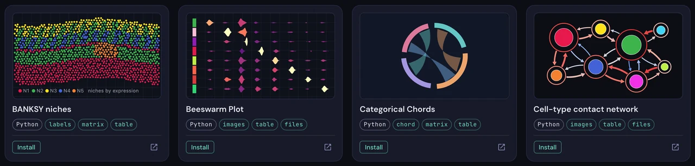
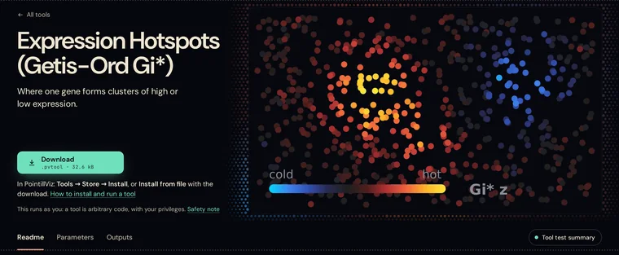
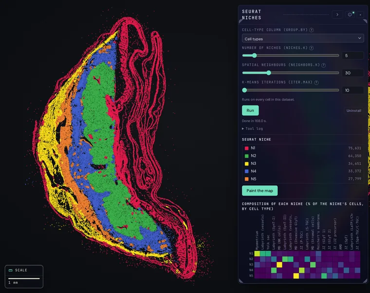
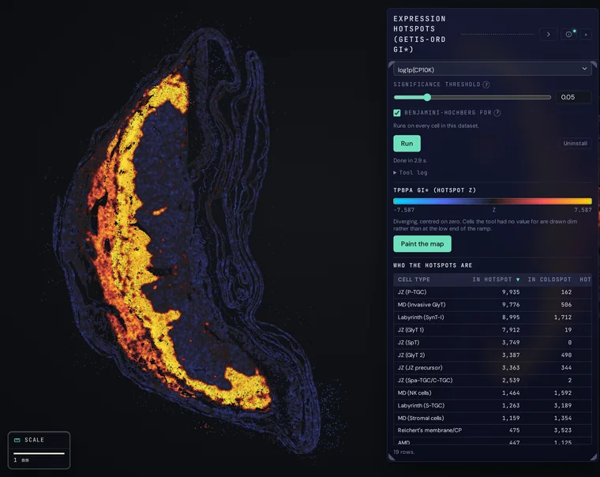
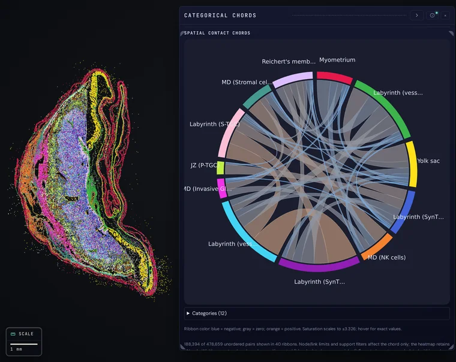

Tool Store
Find, install and run community tools from the Tool Store, read their results, and publish your own.
On this page6
Community tools are analyses that other people wrote, in Python or R; they run on the computer that serves PointillViz.

Open the Tools tab and scroll to Community Tools. Installed holds your tools and Tool Store the ones you can add; Search tools finds both.
The ↗ beside Install opens the tool's page on the store website, with its readme, parameters, outputs and test summary.

Press Install on the tool's card.
Keep Own environment (recommended) and press Install.
The tool gets packages of its own, so those of PointillViz stay as they are.
Wait for Done and press Close.
The card moves up to Installed. A tool that fails its checks is not installed.
A .pvtool file from the Download button of the store website installs with Install from file, at the right of Installed.
Click the tool's card under Installed.
Its panel opens beside the tissue.
Set the parameters.
The ? beside each one explains it.
Press Run.
Press Paint the map.
The tissue takes the colours of the result. Hover a cell to read its value.
Category map
Each cell takes the colour of its category, here its niche. The heatmap under the legend shows which cell types make up each niche.

Map
A value per cell comes with its colour bar: here orange cells sit in clusters of high Tpbpa expression, blue cells in clusters of low expression. A click on a table's heading sorts it.

Chord diagram
Each ribbon joins two cell types that touch. Its width counts their contacts; orange means more contacts than chance, blue fewer. Hover a ribbon for its numbers.

About this tool, the round i in the panel's head, shows the tool's own summary of the run. A result is not saved with the dataset; Export data keeps its values per cell (see Exporting).
Update
A gold Update on an installed card means the store has a newer version. Press it; if the new version fails its checks, the old one stays.
Uninstall
Press Uninstall at the foot of the tool's panel and confirm. The tool and its environment are deleted.
A tool is a folder: a manifest, a Python or R file and the environment it runs in. Build & publish on the store website shows how to write one, test it and send it to the public registry.